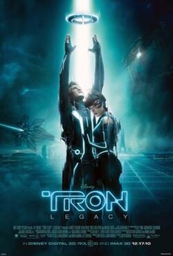
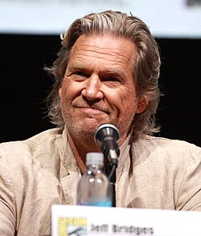
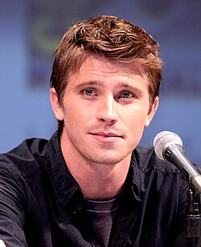
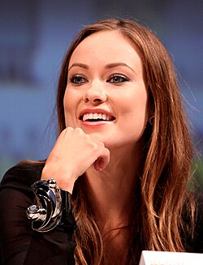

Tron: Legacy is a 2010 American science fiction action film directed by Joseph Kosinski, and written by Adam Horowitz and Edward Kitsis. It is the second installment in the Tron series and a sequel to Tron (1982).
The story follows Kevin Flynn's adult son Sam, who responds to a message from his long-lost father and is transported into a virtual reality called "the Grid", where Sam, his father, and the program Quorra must stop the malevolent digital mirror image of Kevin Flynn, Clu, from invading the real world.

Jeff Bridges as Kevin Flynn, the former CEO of ENCOM International and creator of the popular arcade game Tron based on his own experiences in ENCOM's virtual reality, who disappeared in 1989 while developing "a digital frontier that will reshape the human condition."

Garrett Hedlund as Samuel "Sam" Flynn, Kevin's son, who, while investigating his father's disappearance, is transported onto the Grid himself. Hedlund won a "Darwinian casting process" which tested hundreds of actors, being chosen for having the "unique combination of intelligence, wit, humor, look and physicality" that the producers were looking for in Flynn's son.

Olivia Wilde as Quorra, an "isomorphic algorithm". Flynn refers to her as his "apprentice" and has imparted volumes of information to her regarding the world outside of the Grid, which she longs to experience. She is shown to have a love of human literature, particularly the writings of Jules Verne, and plays Go with Flynn.